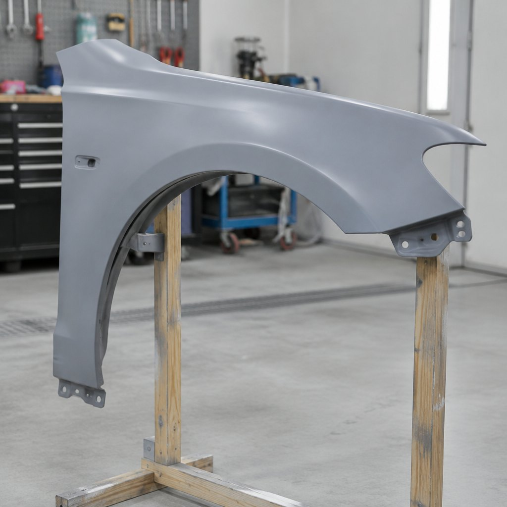
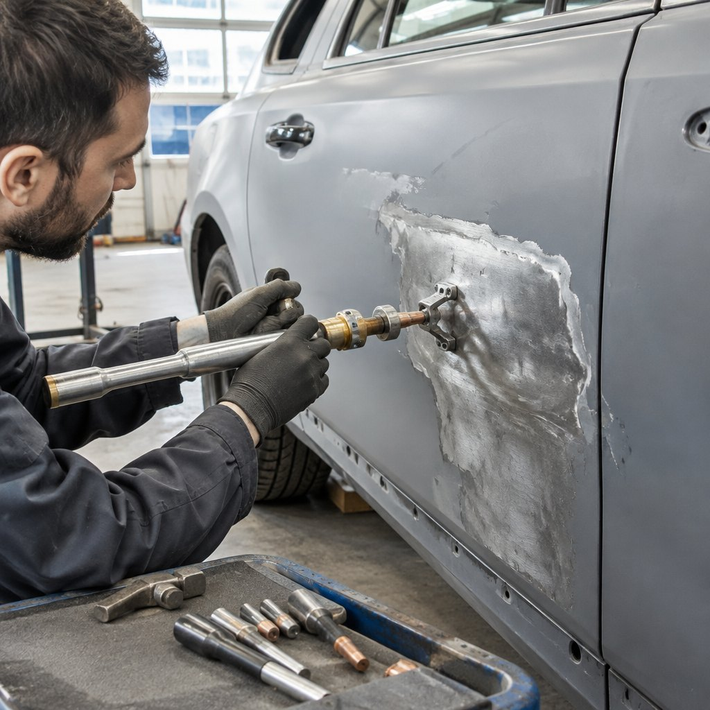
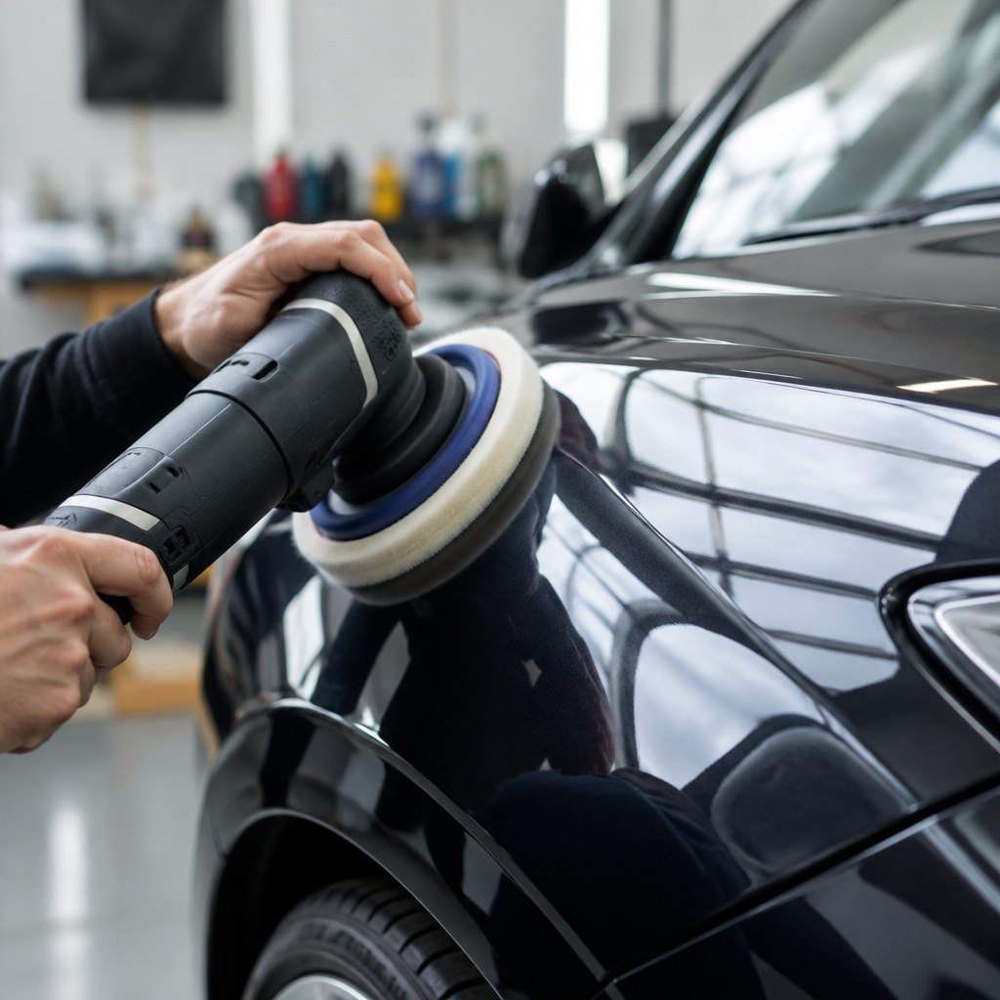
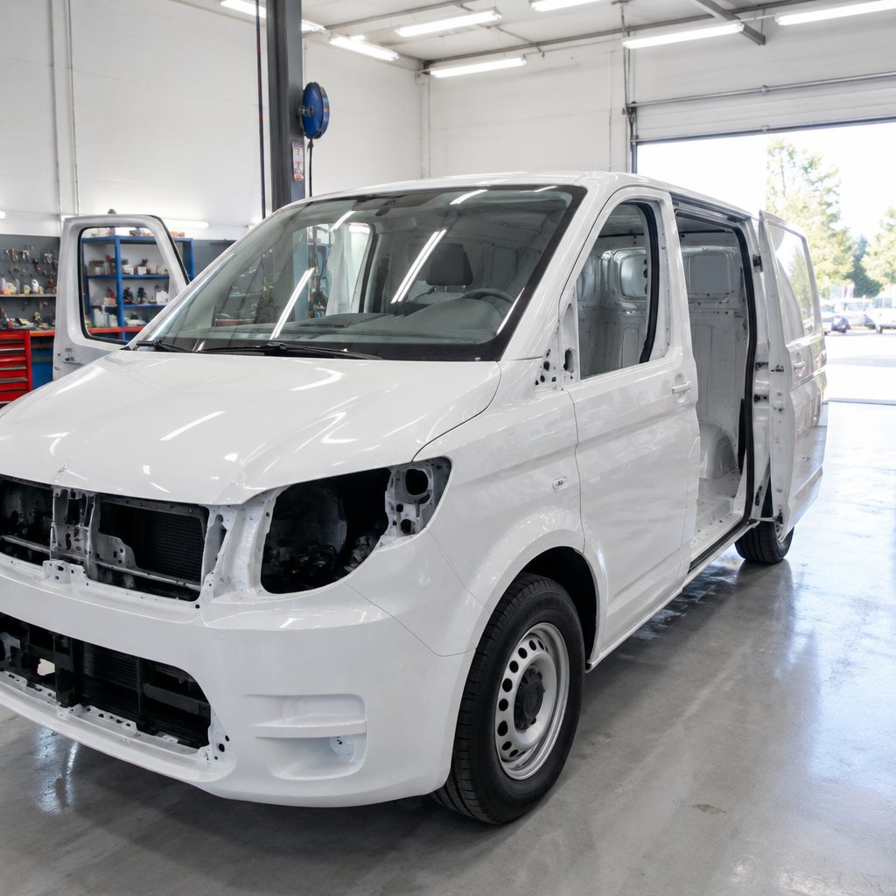
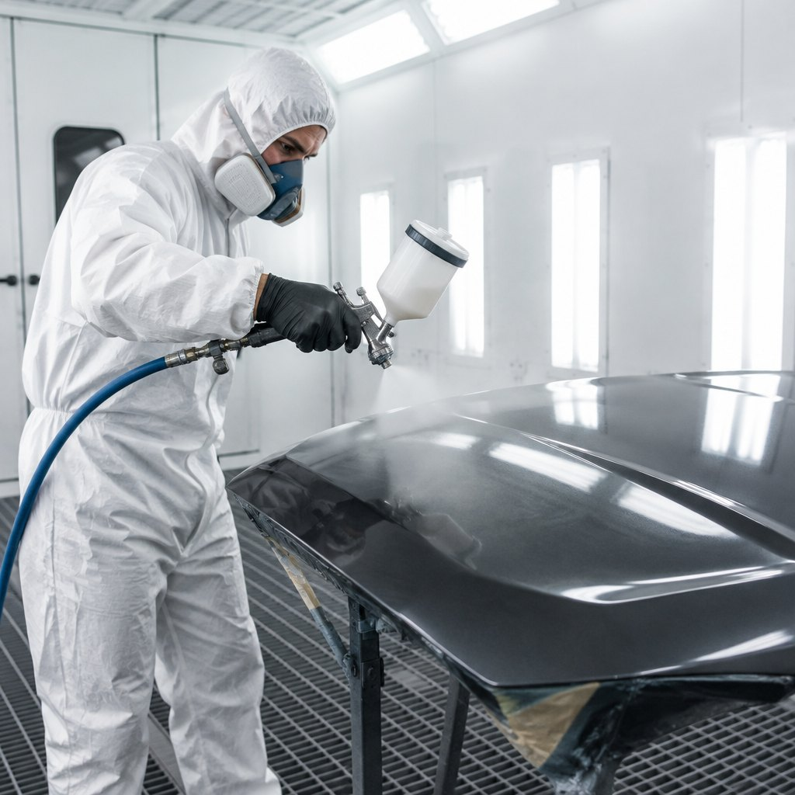
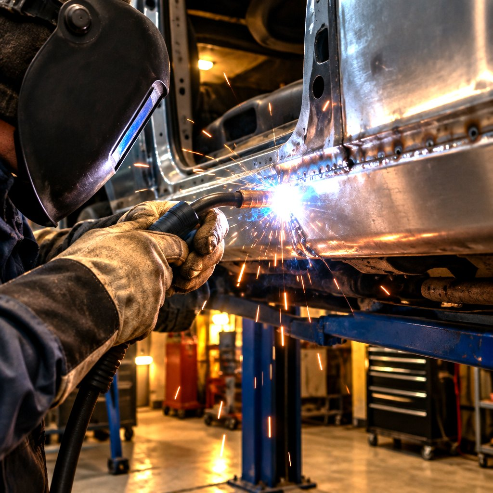

Выберите зону — увидите работы
Восемь зон, с которыми работаем чаще всего. Нажмите на метку на схеме: покажем, что бывает, как делаем, как крепится элемент и сколько это занимает.
Карта кузова
Отметьте нужные элементы — соберём список и отправим в переписку вместе с фото.
Как меняют элемент
Четыре сценария — от болтового крепления до сварки по периметру.
Рихтовка и споттер
До шпатлёвки металл нужно вернуть в форму — насколько это возможно без потери жёсткости.
- Оценка растяжения металла: где тянется, где залом
- Споттер для зон без доступа с обратной стороны
- Правка по рёбрам жёсткости и радиусным зонам
- Минимум шпатлёвки, где это возможно технологически
- Если металл потерял форму — предложим замену

Элементы и результат
Подготовка, покраска, полировка.




Про элементы
Зависит от металла: если коррозия сквозная или элемент потерял форму — замена. Считаем оба варианта.
При частичной покраске часто делаем переход, чтобы не было видно границы цвета.
Да, подберём элемент и крепёж: новое или б/у по бюджету.
Да, если коррозия не ушла ниже. Это видно после зачистки.